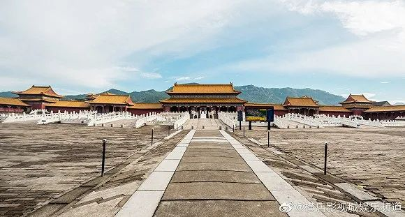

影视行业开启自救：复工不会拍大场面 积压剧红利很难说
原文链接 备份链接 图片来源：横店影视城官方微博 记者 ：刘燕秋 “ 种种困境让这个行业过往的积弊都浮现了出来，但在困境中也不乏影视新势力带来的机遇。 ” 横店复工模式难复制 “我们复工的话可能要到2月底了，返回横店的离组员工还要隔离一段 …
《大江大河2》片场照
记者：刘睿欣
“
“横店说要复工，有人不理解，觉得大家不着急看剧，更何况还有那么多待播剧。但剧组停工，幕后工作人员就是零收入。我们也是个人，不代表剧组，复工都是为了养家糊口。”
”
近日，浙江省委宣传部印发《关于积极应对疫情推动文化企业平稳健康发展的意见》。意见中指出，作为拥有横店影视文化产业集聚区、象山影视城两大影视基地的省份，浙江省将加大对影视基地的扶持，加快因疫情防控暂缓创作生产的重点电影、电视剧和网络视听项目的审批节奏，确保如期上映、播出。对于因受疫情影响停业的电影院线，也会安排1000万元予以适当补贴。
随着各大企业逐步恢复正常工作，横店、象山及东方影都等影视基地也纷纷将复工提上议程。2月10日，横店影视文化产业集聚区管理办发布《关于确保新冠肺炎疫情防控期间影视企业（剧组）安全有序复工的指导意见》；同日，象山影视城出台应对疫情支持影视企业共渡难关八项措施；2月19日，东方影都融创影视产业园品牌总监答新京报记者问称，产业园内部已经开始有序复工。但据界面新闻记者了解，在大环境向好的形势下，本该有盼头的电影人却仍在焦灼等待。
停工期间，受到影响的不止投资人、演员、导演……剧组停摆下，内部的美术、服装、道具、灯光也在面临疫情的大考。春节之前，影视行业已经在面临自我更新和淘汰，当工作被迫按下暂停键，这场战“疫”又会给影视人带来什么新的变化？
在横店某剧组美术部门工作的李嘉已在家停工超过一个月了。之前，剧组给大家的放假时间是3天，预计大年初三复工。结果大年初二传来了推迟复工的消息，大年初三当天（1月27日），横店就下发通知，暂停了城中所有剧组的拍摄活动。

图源：横店影视城娱乐频道
李嘉所在的剧组原本还剩一个月的工期。因为这场突如其来的疫情，剧组约一半人解散回家，还有一半被迫留在横店。起初他们还没预计到疫情带来的影响，只是因为家太远、不方便、等工资等原因才留在原地待命，到后来演变成横店封街、封房间，不让他们出去。“剧组管吃管住，现在群里面说得最多的话就是‘饭来了’。”
困扰剧组成员的不仅有停工和封闭，他们也没拿到应有的报酬。春节之前，他所在的剧组已经因为资金压力拖欠了两个月的工资。停工通知一发，第二天剧组直接宣布“无薪休假”。一方面尽量缩减剧组的开支，另一方面也是怕拿了工资的人休假结束后“消失”不回剧组。大部队解散后，留守在横店的只有制片、司机和道具，有些工作人员见工资没有保障，还扣押了剧组一部分器材。“合同是没有用的，我们这个行业，不知道是圈子比较封闭还是什么原因。出现这种情况，只能追责部门长，或者介绍你去的朋友、同事。不过他们压力也大，发不出钱只能自掏腰包，不然他们的名声也臭了。”
李嘉也没法在家云办公。那些还能线上开会的剧组，属于仍未开机的幸运儿。他所在的剧组拍摄工作都快结束了，怎么线上开会呢？前两天剧组还在统计复工需要回横店的人员名单。剩的戏不多了，因此也不是所有人都要回去。他还在等具体的复工通知和计划，但对于已经离开横店的人，没有发工资也不想复工。不过他想着，“拍摄都快结束了，怎么也不会黄吧。不过也说不定，也有大剧组拍到一半不拍的，我还是抱有希望的。”
他的朋友此前因为接了一个大导演的戏，推掉了四个要求不那么高，但赚钱多的戏。疫情一来，那四个戏全部解散，就剩实力雄厚的大导还在开工。此时，距离中国广播电视社会组织联合会电视制片委员会发布停工通知仅仅不到一月的时间。
“传出横店复工的消息后，有的人不理解，觉得大家不着急看剧，更何况还有那么多待播剧。但剧组停工，大部分工作人员就是零收入。我们也是个人，不代表剧组，复工都是为了养家糊口。”

此前宣布停工的《大江大河2》目前还没有复工的消息
2月15日，电视剧《传家》演员何佳怡发布微博称已收到复工通知，之后又晒出在横店旁的定位。但一位知情人告诉界面文娱记者，尽管之前横店出台了复工通知，并列出了一系列复工条件，但真正符合这些条件的剧组只有两个，并且他们也没有真正复工。包括已经前往横店的演员何佳怡，也在酒店内“宅”了10天。
根据当地要求，所有外地返回横店的人员需要在横店隔离14天，并参加实名制考试。剧组全体人员都考到100分，才能递交复工申请，进行拍摄。这无疑增加了复工的难度——要求体工作人员同时到齐隔离很难，14天里给所有被隔离的工作人员正常支取工资，对于他们来说也是一笔不小的开支。
此前，横店已经决定对拍摄用户减免一些费用，对群演演员提供一定的住宿补贴。象山影视城也表示，会对剧组提供优惠政策，包括拍摄场景全免，摄影棚、酒店费用降价30%到50%，置景补贴20%到50%等。青岛东方影都则在官方公众号发布，免除停拍期间（即从1月29日停拍日起，至政府相关部门恢复拍摄日止）停拍剧组所使用摄影棚、重置车间租金。但实际上，这些措施并不会从根本上解决目前影视基地和剧组的危机。
疫情发生之前，影视行业就已经处在萧条状态。受到腾讯视频、爱奇艺、优酷等平台放缓购剧节奏、降低购剧成本影响，过去一再“求量”的影视公司面临着积压项目不能被发行，新项目利润极低的困境。进入2018年后，传媒行业政策监管升级，内容监控收紧，又碰上“税补风波”“阴阳合同”等等行业规范性问题，影视公司经营风险大大提升。反映到业务上，就导致了大咖演员不愿意降价接戏，头部项目难开机，影视基地运转难，工作人员薪酬缺乏稳定性和持续性。这次疫情对于从业者来说只是一次雪上加霜的打击。
春节档作为电影票房的大盘，电影市场全年最重要的档期之一，此次大范围停业可能导致电影行业上中下游一季度零收入。而对于参与其中的影视公司来说，他们的投资成本无法回收，演员的档期大乱，下半年的开机数量还会进一步减少。
李嘉说，各大影视基地的优惠政策虽然不能落实到工作人员个人的头上，但对于整个行业是有正向意义的。只有影视公司活着，现金流充足，才能多开项目。有项目才有工作机会。
象山影视城安委办工作人员告诉界面文娱记者，景区预计将于2月28号正式开园，并迎接游客。届时，除可能造成人流密集的场景外，户外的区域将全部开放。游客进入园区后，从第一个关卡开始就会测量体温、发放二维码、消毒，之后还有二次检测，尽可能地保障游客的安全。此前盛传已复工的《青簪行》，也已经早早地在象山隔离待命。剧中演员赵英博、陈哲远均发布复工微博，演员宣言2月25日的直播地点也在象山。
陈哲远复工微博截图
就李嘉所知，横店区域内暂时还没有出现确诊病例。象山除了一开始出现的来自湖北的确诊病例外，也未再出现其他病例。处于低风险区的影视城，复工指日可待。
“只能祈祷疫情后会出现消费娱乐大繁荣？像2004、2005年那样？做个美梦吧。”
注：为保护当事人隐私，文中李嘉为化名。
未经授权 禁止转载

原文链接 备份链接 图片来源：横店影视城官方微博 记者 ：刘燕秋 “ 种种困境让这个行业过往的积弊都浮现了出来，但在困境中也不乏影视新势力带来的机遇。 ” 横店复工模式难复制 “我们复工的话可能要到2月底了，返回横店的离组员工还要隔离一段 …
原文链接 备份链接 王一博所在的《有翡》剧组此前宣布停工（图源：电视剧《有翡》官方微博） “ 虽然剧组复工踊跃，但短期来看，距离真正的复工还需要时间。 ” 2月10日，横店影视集聚区管理办公室下发关于确保新冠肺炎疫情防控期间影视企业（剧 …
原文链接 备份链接 ***机器再度轰鸣*** 距离温州南站五六公里的瓯海区富泉路上，遍布着各式鞋厂、超市和快餐店。原本熙熙攘攘的街道，如今在疫情的阴影下显得有点冷清。 临近饭点，马路南端一家电子厂的员工走进附近一家快餐店——这个快餐店的 …
原文链接 备份链接 防疫压力层层传导，但各区域、 部门之间缺乏互通互认的信息共享机制超长春节假期终于结束，上班族等来了复工通知。 数据显示，2月14日至2月22日，全国累计发送旅客1.17亿人次，每日客流量均实现环比增长。但在返程速度逐渐 …
原文链接 备份链接 👆本号引起极度舒适，建议星标一下 在疫情爆发之时，市场技术与效率优势填补了行政力量难以触达的盲点，行政力量随后成为了大局指挥的关键要素。但在新的阶段，当市场中各类经济体本身有了更多的常态化需求时，行政力量帮扶政策与一刀 …